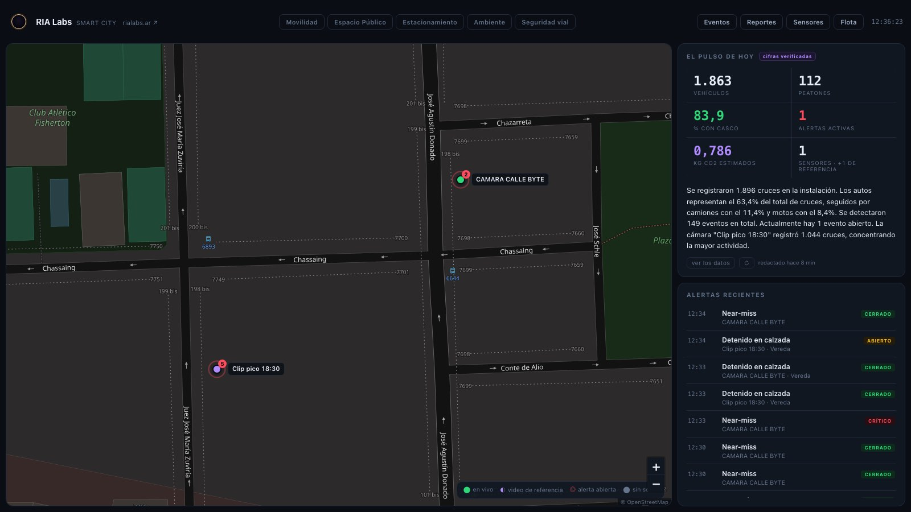
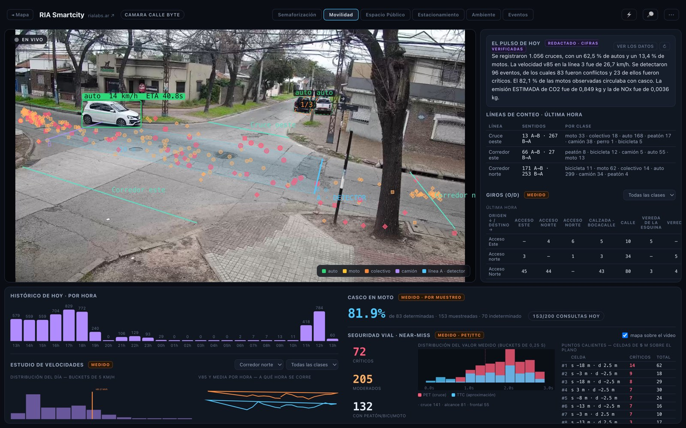

RIA Labs · investigación y construcción
Trabajamos como un laboratorio: una pregunta, un prototipo que corre sobre datos reales, y una medición que decide si sigue. Esto es lo que hay hoy sobre la mesa.
bajá para recorrerlo
El laboratorio
No investigamos para publicar.
Investigamos para que algo funcione en la calle.
RIA Labs no es una fábrica de software que espera pliegos. Es un laboratorio de investigación y creación permanente: buscamos problemas reales, viejos, caros y aburridos — y probamos si la inteligencia artificial los rompe.
La regla es una sola: un experimento vale cuando produce un número. No una maqueta, no un video renderizado, no una promesa de roadmap. Un sistema que corre sobre datos reales y una medición que se puede discutir.
Lo que sobrevive a esa prueba se vuelve producto, con runbook de instalación y cliente adentro. Lo que no, se documenta y se guarda — porque la pieza que hoy no sirve suele ser el motor del proyecto siguiente. El detector que cuenta autos en un semáforo es el mismo que lee patentes en un portón.
Proyecto 01
El sistema operativo de una concesionaria
Una concesionaria mueve decenas de autos por día entre recepción, taller, lavadero y depósito. Sin sistema, esa operación se sostiene con planillas, un tablero de tarjetas en la pared y lo que cada uno recuerda. Drivecore convierte esa operación física en un ecosistema digital único, medible y auditable — desde que una cámara reconoce la patente hasta que el cliente se lleva el auto.
← deslizá el circuito →
Cada transición se sella con quién, cuándo y cómo. El registro es de solo-agregar: nada se edita, nada se borra. Las duraciones se calculan en horas hábiles netas — un auto que entra el viernes y sale el lunes no “tarda tres días”.
Analítica de video lee la patente al llegar, la cruza contra la base y enriquece marca, modelo y color. Si hay turno, la orden ya está precargada con cliente, trabajos y asesor. Nadie tipea nada.
La app del mecánico está pensada para manos sucias: pocos botones, todo grande, el audio como entrada principal. Dicta lo que hizo y la IA lo estructura en trabajo, repuesto, estado y ubicación. Si duda, deja el campo vacío — no inventa.
El mecánico no puede declarar “terminado”: al cerrar, la unidad pasa a control. Si el asesor rechaza, vuelve al mismo técnico y el motivo queda registrado. La compuerta vive en el sistema, no en la buena voluntad.
Un tablero conversacional: se pregunta en lenguaje natural, por texto o por voz, y responde con la métrica, el gráfico y la ficha de procedencia del dato — origen, rango, tamaño de muestra y supuestos.
Una sola verdad para todos · la vista justa para cada uno
Proyecto 02
La vertical de seguridad · plataforma de monitoreo con motor propio
Las plataformas de gestión de video del mercado son excelentes moviendo cámaras y pésimas entendiendo lo que pasa adentro del cuadro: para eso revenden analítica de terceros. Nosotros construimos las dos mitades — la plataforma de monitoreo y los modelos que detectan. Rostro, patente, objeto, invasión de zona, cruce de línea, aforo. Es nuestro código, corriendo en la placa del cliente.
La consecuencia de tener las dos mitades es la que importa: una pantalla de monitoreo deja de ser un desarrollo y pasa a ser una configuración. Un admin elige cámaras, elige qué plugin las mira, define cómo se compone un evento y qué veredicto sale. Sin SQL, sin redeploy, sin nosotros.
Este es el lugar de la seguridad en el laboratorio: identidad, patente, perímetro, accesos. Está separado a propósito de la plataforma urbana del proyecto 05, que mide la calle y deja la seguridad ciudadana explícitamente afuera. Mismo motor de detección, dos productos, dos ventanillas — y esa frontera no es prolijidad nuestra: es lo que le permite a un municipio comprar medición sin abrir el debate de la vigilancia.
Las tres pantallas de arriba corren contra el mismo servidor, con el mismo binario, y su única diferencia es una fila en la tabla de definiciones de evento. Ésa fue la prueba de fuego del diseño: si una pantalla nueva necesita código, el producto no existe.
No sólo “cámara ve cosa”. Un evento puede componerse del mismo plugin en N cámaras (patente en entrada y salida) o de varios plugins combinados (patente + rostro en cuatro cámaras) reconciliados en un único hecho, con su presencia y su aforo.
Cada pantalla puede enriquecer sus eventos con un modelo de visión: foto fija, secuencia de cuadros o clip de video. El admin describe en castellano lo que quiere saber y un copiloto redacta el prompt — con el costo por 1.000 eventos medido sobre esa instalación, no estimado de una tabla.
El buscador forense encuentra por nombre, por patente parcial o por descripción — “campera negra”, “moto sin casco” — sobre el historial completo, con el alcance limitado a las pantallas que ese usuario puede ver.
Los vectores biométricos viven en una tabla satélite, fuera del canal de tiempo real, con acceso denegado por defecto. Al modelo de lenguaje nunca le llega biometría: sólo el recorte de imagen y una lista blanca de atributos.
Proyecto 03
La conversación con el cliente, como infraestructura
En casi toda empresa argentina, la relación con el cliente vive en el WhatsApp personal de alguien. Cuando esa persona se va, se va la relación. Comms convierte ese canal en infraestructura: cada mensaje que entra queda persistido, clasificado, ruteado al responsable y medido — sin que el equipo cambie de aplicación.
Nació como el módulo de un solo cliente y se rehizo como plataforma multi-empresa: un motor compartido, aislamiento de datos a nivel de base, y la lógica propia de cada cliente conectada por webhooks firmados en vez de ramas en el código. Byte y VRIO fueron los primeros equipos en usarlo en producción sobre su propia operación comercial, antes de ofrecérselo a nadie.
← deslizá el recorrido →
Las tres calles de la izquierda son tres empresas distintas sobre el mismo motor. El aislamiento no es una condición en el código de la aplicación: es una política en la base de datos, y un mensaje no puede cruzarse de calle aunque el código se equivoque.
Lo propio de cada cliente —su CRM, su catálogo, sus comandos— vive fuera del motor. Cuando un mensaje matchea una regla, la plataforma le pega a la URL del cliente firmada estilo Stripe, con reintentos exponenciales y auditoría completa de cada entrega.
Resumen de conversación, transcripción de audios con caché, y ejecución de prompts arbitrarios con el hilo como contexto. Cada llamada deja registrado tokens, latencia y modelo — el costo por cliente es una consulta, no una estimación.
La media entrante se re-aloja en almacenamiento propio en vez de depender del CDN del proveedor, con acceso por URL firmada de vida corta. Y una vez transcripta, la nota de voz entra al resumen y al buscador como texto.
Tokens del proveedor, identificadores de línea y secretos de firma se guardan cifrados por cliente. El secreto de un webhook se devuelve una sola vez, al crearlo: después ni la plataforma lo puede volver a mostrar.
Proyecto 04
Semáforos que ven, en vez de adivinar
Lo que está enterrado bajo el pavimento de casi todos los semáforos actuados del mundo es una espira inductiva. Contesta una sola pregunta, binaria: ¿hay un vehículo encima mío? Toda la ingeniería de semáforos de los últimos cincuenta años —verde mínimo, tiempo de paso, corte por brecha— está construida sobre ese único bit, y existe en buena medida para compensar la pobreza de ese sensor.
Una cámara con tracking contesta esa misma pregunta y además, por cada vehículo: posición, velocidad, clase y tiempo estimado de llegada a la línea de parada. Es un superconjunto estricto. Así que el prototipo no inventa una teoría de control nueva —eso suena a humo y un ingeniero de tránsito lo detecta— sino que implementa la doctrina canónica con un sensor mejor.
← deslizá para comparar →
El manual de detectores de la administración federal de carreteras de Estados Unidos ubica la espira de avanzada a 3–4 segundos del semáforo: unos 52 metros. Medir 150 metros aguas arriba le da al controlador quince segundos de anticipación — sabe que viene un pelotón antes de que llegue.
Abajo a la derecha corre el golpe de efecto: un semáforo de tiempo fijo sombra se alimenta de la misma secuencia real de arribos medida por la cámara, y se acumula la demora de los dos en vehículo-segundo. Mismos arribos, dos controladores, una sola diferencia. El porcentaje no se muestra hasta tener muestra suficiente — sin ese freno los primeros segundos dan “100 % mejor”, y un número así es lo que hace que a una demo no se le crea nada.
Cada caja lleva clase, velocidad instantánea y ETA a la línea de parada. La escala en metros no se estima: se marca sobre el asfalto con una herramienta de calibración que dibuja un auto de referencia de 4,4 × 1,8 m para verificar que cerró.
Es la primera objeción y tiene dos respuestas estándar: emular la salida de la espira por contacto seco hacia la entrada de detector del controlador que ya está instalado, o hablar el protocolo abierto de la industria si el equipo es moderno. No se cambia el semáforo: se cambia el sensor.
Una compañía británica desplegó exactamente esta idea —cámaras reemplazando espiras— en quince cruces de un área metropolitana durante cuatro años, publicó −23 % en tiempos de viaje e igualó al software de control adaptativo de referencia. No proponemos un experimento: proponemos una categoría que existe, con la ventaja de que el motor de analítica ya lo tenemos corriendo.
El verde se mantiene mientras exista un vehículo entre 2,5 y 5 segundos de la línea: es el tramo donde el conductor no sabe si frenar o pasar, y cortar ahí es donde se producen los choques. Si la ventana está vacía, hay brecha segura y el verde termina.
Un prototipo de una sola cámara no puede mostrar coordinación entre intersecciones —la ola verde— y un despliegue real lleva una cámara por acceso. Lo decimos antes de que lo pregunten: es más barato que perder la reunión por una omisión.
Este prototipo tuvo descendencia. El mismo motor que le sirve el verde al semáforo terminó midiendo cuatro verticales de una ciudad, 24 horas por día: es el proyecto 05.
Proyecto 05
La ciudad medida con las cámaras que ya tiene
El proyecto 03 contestó su pregunta —una cámara con tracking es un sensor estrictamente mejor que la espira enterrada— y al contestarla abrió una más grande: si el equipo de esa esquina ya entiende todo lo que se mueve, ¿por qué sólo maneja el semáforo? Los mismos vehículos que el controlador usa para decidir el verde son el conteo que Tránsito no tiene. Las mismas trayectorias son el mapa de por dónde cruza la gente de verdad. El mismo auto quieto, en el carril de al lado, es doble fila.
Smartcity es ese prototipo convertido en plataforma: cuatro verticales sobre un solo sensor —movilidad, espacio público, estacionamiento, ambiente y servicios— corriendo en una PC común al lado de la cámara, sin nube y sin obra. Hoy mide una esquina real de Rosario las veinticuatro horas. Esa instalación es nuestra: el primer municipio todavía no existe, y así lo contamos.
Las guías que leen los funcionarios de la región —la del BID entre las más usadas— definen «smart city» como gestionar la ciudad con datos, transversal a todas las áreas: movilidad, ambiente, servicios, gobierno digital, participación. Nadie compra una smart city entera. Se compran capas, casi siempre desordenadas y casi nunca la de abajo.
Lo que una ciudad mediana sabe de su propia calle son tres cosas: un censo manual de hace años, espiras enterradas que contestan un bit, y el reclamo del vecino. Sin capa de medición, todo lo que se construye arriba decide sobre datos viejos — y un tablero con datos viejos es peor que ninguno, porque parece información.
La primera generación de smart cities se fue en ciudades-vitrina y tableros. La crítica más citada del rubro —de Against the Smart City al giro de Barcelona hacia la soberanía de sus datos— no discute la tecnología: discute el orden. Medir sin decidir no cambia una esquina, y atar una ciudad a una plataforma cerrada es una hipoteca.
El video se procesa en el equipo y muere ahí; al disco van números y, por excepción declarada, la foto del evento que justifica una alerta. Sin facial, sin patentes, sin video continuo. La vertical de seguridad ciudadana queda afuera a propósito: es otra conversación, otro presupuesto y otro de nuestros productos —el 02—, y mezclarla acá contamina la medición con el debate de vigilancia.
Una cámara ve mucho más que el fenómeno por el que se instaló. Por eso la segunda vertical no cuesta como la primera: no hay obra ni fierro nuevo, hay un módulo que se enciende sobre una esquina que ya está instrumentada. Es el mismo principio que nos hizo escribir el motor una sola vez, del otro lado del mostrador.
Ya hay normas ISO que listan qué indicadores describen una ciudad; lo que se discute no es cuáles son, sino quién los produce y si son portables. Nuestra respuesta viaja adentro del producto: API documentada, export a CSV y las entidades en el estándar abierto que piden los pliegos. Si mañana eligen otro proveedor, los datos se van con ellos.
Este bloque es contexto, no folleto: dice la porción que atacamos y, sobre todo, la que dejamos afuera. Cada punto de arriba se convirtió en una decisión del producto de abajo — incluidas las dos que nos sacan trabajo de encima.

Se entra por el mapa y se baja a la esquina: la jerarquía es ciudad → sensor → módulo, nunca quince funciones en un menú plano. Cada pin dice su estado —en vivo, video de referencia, alerta abierta— y el párrafo del pulso lo redacta un modelo de lenguaje sobre los números que el sistema ya calculó, no sobre lo que el modelo recuerda: si una cifra no sale de una consulta, la oración se rechaza antes de llegar a la pantalla.

Cuatro verticales sobre el mismo sensor · una queda afuera a propósito
Líneas de conteo, zonas y reglas se declaran; el motor es uno solo. Un if por módulo de negocio sería un bug de diseño, no un atajo. La consecuencia es la que le importa a una ciudad: la esquina que hoy cuenta autos mañana mide doble fila sin que nadie vuelva al poste.
Uno rápido, por cuadro: detector, tracker y homografía, que convierte pixels en metros y segundos. Otro lento y semántico —un modelo de visión-lenguaje— que mira una zona cada media hora y contesta si hay basura acumulada o la calzada se anegó. Cada uno con su presupuesto diario: agotar ambiente no puede dejar sin medir a seguridad vial, y cuando se agota la pantalla lo dice.
Cuasi-accidentes medidos con las métricas estándar del rubro: los segundos que faltaron para que ese cruce fuera un choque. De los 18 conflictos de la primera corrida quedaron 7: once eran artefactos —la misma camioneta detectada dos veces, tracks fantasma, un ciclista partido al borde del cuadro— verificados uno por uno en la imagen. Y el único crítico de veinte minutos de video es el que un humano marcaría.
El buffer de video vive en RAM. A disco van métricas y trayectorias sin identidad, y una sola excepción declarada: un cuadro limpio por evento, con retención configurada por el municipio, que es lo que hace auditable una alerta. Que la base sólo tenga clase y hora se verifica con una consulta, no con una promesa nuestra.
Reporte ejecutivo redactado, resumen del día y preguntas en lenguaje natural sobre los datos de la ciudad. La regla es una: el modelo redacta, el sistema calcula. Un validador rechaza toda cifra que no salga de una consulta — probado plantando números falsos a propósito, incluidos los porcentajes que el modelo intenta derivar solo.
Es una cámara en una esquina, no un municipio instalado. El semáforo corre contra su propio controlador sombra, no contra un cruce conectado. Y la calibración de esa ochava sigue siendo provisoria hasta medir dos distancias con cinta — de ahí sale el error lateral que todavía nos deja un falso positivo. Nada de esto se descubre en la reunión: se dice antes.
Cómo trabaja el laboratorio
No son valores de brochure. Son las reglas que decidieron, en cada uno de los cinco proyectos de arriba, qué se construía y qué se tiraba.
Todo arranca con una pregunta que se pueda contestar con evidencia: ¿una cámara ve lo suficiente para manejar un semáforo? ¿Un mecánico puede cargar una orden hablando? Si la pregunta no tiene respuesta medible, no es un proyecto: es una idea.
No mostramos maquetas. Mostramos algo que corre sobre datos reales — la calle de verdad, la concesionaria de verdad, los mensajes de verdad. Un prototipo que sólo funciona con datos de ejemplo no probó nada.
Cada número de esta página salió de una corrida, no de una proyección. Y cuando el número todavía no es confiable, lo ocultamos: el comparador del semáforo se queda mudo hasta tener muestra suficiente, porque un número inflado quema toda la credibilidad del resto.
Cada proyecto viene con su lista de lo que todavía no hace. Es más barato decirlo primero que defenderlo después — y es la única forma de que cuando decimos que algo sí funciona, se nos crea.
El detector que cuenta autos en el semáforo es el mismo que lee patentes en un portón, y el que dispara el ingreso de la concesionaria. Cada experimento deja una pieza reutilizable — por eso el proyecto número cinco siempre cuesta menos que el primero.
Un experimento que sobrevive se convierte en producto instalable: procedimiento paso a paso, verificación de cada paso, y un cliente adentro. Mientras no exista ese procedimiento, sigue siendo un experimento — y lo decimos así.
Lo que sigue
Los cinco proyectos de esta página empezaron igual: alguien nos contó un problema viejo, caro y aburrido que todos daban por resuelto. Contanos el tuyo.